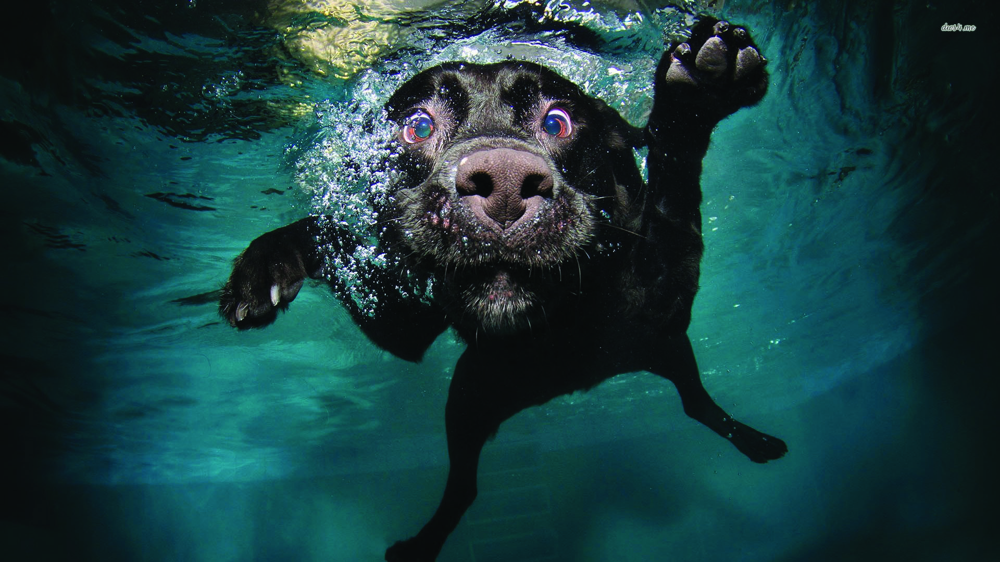

您好，我是鄧國豐，畢業於台南應用科技大學 應用設計研究所-視傳組。至目前，主要工作經歷在於-平面設計(VI、LOGO與各類文宣品)，並曾共同參與一款「INIU」的App介面設計。專業發展主要以為客戶設計符合他們所需的視覺感受，並導入不同的設計元素與客戶討論方向、創想不同系列的主題，而期間，樂於與客戶溝通並逐一釐清客戶的訴求，甚至更可激發出不一樣的可能性。個人認為將無型的溝通化作有形且別具意義的設計，是自身設計能力專業化的重要課題。
工作首重小組與時間的相互配合，亦是研究所期間於指導教授的產學合作小組與擔任兼任專案助理所培養而成。拿捏工作或專案期程，使我更能判斷各項事務的先後緩急，與團隊或小組的配合，更能從中學習人際相處與團隊分工，進一步地逐漸融入團體，向周邊人事物進行學習以強化自身不足之處。
現階段個人經歷雖淺，但認為品牌的設計與開發，至應用到眼見之各項視覺平面，所形成諾大的效應，甚至可深植人心使世人永記，而這樣的魅力正驅使著自身培養相關經驗與累積能量。而自身不懼壓力，更希望每階段由基層做起以建構自身於該工作中的專業與基底。
對於未來的規劃，瞭解設計一途必定是多元且須與諸多方面的合作。更專業實務的經驗與不同團隊的合作，更是自身引領期盼的，也正是設計的魅力所在，如此便能拓展自我縱向與橫向的專業能力，期望自己有朝一日能夠於業界中成為令人具有映像的『個人品牌』。
